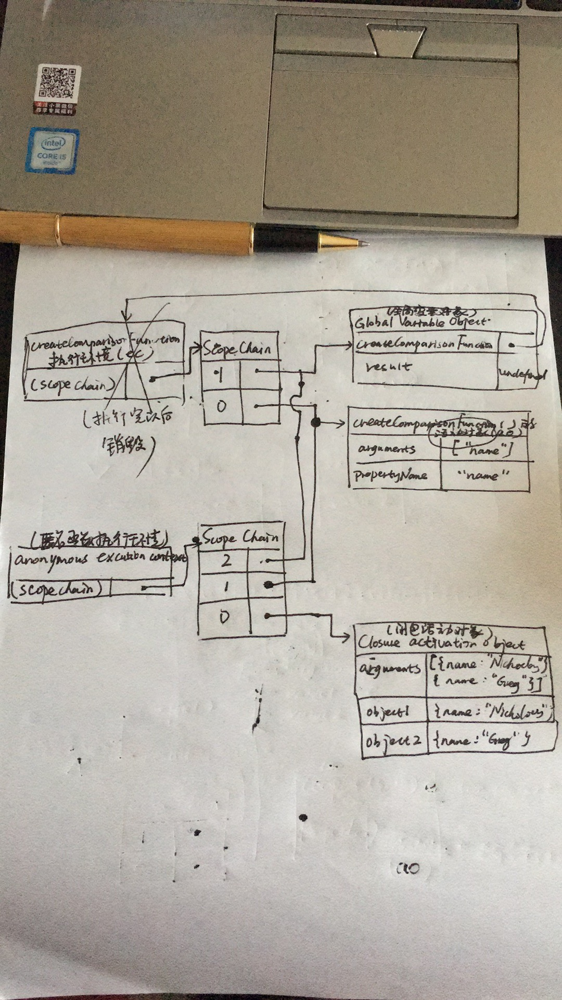

声明函数有两种方式：函数声明和函数表达式。
1、在函数声明中，function functionName(){},除了IE之外其他主流浏览器会给声明的函数默认有一个name属性值 该值永远等于函数的名字，即functionName.name = functionName; 另外函数声明会存在函数声明提升，也就是说函数声明语句可以放在调用干函数的后面，比如： sayHi(); //调用函数 function sayHi() { console.log("Hi"); } 2、函数表达式 var functionName = function(arg1,arg2,...){} 这种形式的函数必须先声明后使用，因为函数表达式的声明的顺序是这样的： 首先创建一个匿名函数,然后把该匿名函数赋给一个变量functionName; 这种形式看起来就好像是变量的赋值语句,想一想，你在使用一个变量的时候如果没有给它赋值，是不是会报错？。 所以函数表达式，必须先声明后使用。以下会报错。 sayHi(); //调用函数 var sayHi = function(){ console.log("Hi"); } 既然上述说了，函数表达式相当于把一个匿名函数赋给一个变量，那就是说可以把这个匿名函数当做一个变量值， 一个变量可以当做函数的返回值来使用，比如return functionName; 所以，可以把匿名函数作为一个函数的返回值（变量）来使用。比如： function createComparisonFunction(propertyName){ return function(object1,object2){ var value1 = object1[propertyName]; var value2 = object2[propertyName]; if(value1 < value2) { return -1; } else if(value1 > value2){ return 1; } else { return 0; } } } createComparisonFunction函数就返回了一个匿名函数，该返回值可能会被赋给一个变量，也可能以其他的形式被调用。 在把函数当成值来使用的情况下，可以使用匿名函数。不过，这并不是匿名函数唯一的用途。递归：一个函数通过函数名调用自身的情况下构成的。
function factorial(num){ if(num <= 1) { return 1; } else { return num * factorial(num-1); } } 这是一个经典的递归函数，当这样调用时factorial(4);没什么问题， 但是如果把该函数当成一个值赋给另外一个变量的时候，比如： var anotherFactorial = factorial; factorial = null; anotherFatorial(4); //出错 原因：首先，先把factorial()函数保存在变量anotherFactorial中，然后释放了factorial这个变量， 结果，就只有一个变量anotherFactorial指向原始函数。接下来执行anotherFactorial(4),由于必须执行 factorial()，但是factorial已经不存在了，所以会报错。可以用arguments.callee来解决这个问题， arguments.callee这个属性指向正在执行的函数，即可以这样修改： function factorial(num){ if(num <= 1) { return 1; } else { return num * arguments.callee(num-1); } } 但是arguments.callee在严格模式下是不能访问的。 不过可以使用命名函数表达式来完成相同的结果： var factorial = (function f(num){ if(num <= 1) { return 1; } else { return num * f(num-1); } }); 这种方式在严格模式和非严格模式下都能使用。
闭包
一些开发人员总是搞不清楚匿名函数和闭包的区别，因此总是混用。 闭包是指有权访问另一函数中的变量的函数。 创建闭包的方式，就是在一个函数内部创建另一个函数。 比如前面的createComparisonFunction()函数，虽然内部匿名函数被返回了，甚至在其他地方被调用了， 但是仍然可以访问外部函数的propertyName属性，因为内部匿名函数的作用域链中包含createComparisonFunction 函数的作用域（自己画一下作用域链就明白了）。 要彻底搞清楚其中的细节，必须理解从函数第一次被调用时发生了什么入手。 当某个函数第一次被调用时，首先会创建一个执行环境（excution context）以及相应的作用域链； 并把该作用域链赋给一个特殊的内部属性[[Scope]]; 然后使用this,arguments以及其他命名参数来初始化函数的活动对象（activation object）。 但在作用域链中，外部函数的活动对象始终处于第二位；外部函数的外部函数的活动对象处于第三位，... 一直到作用域链终点的全局执行环境。 在函数执行过程中，为读取和写入变量的值，就要在作用域链中查找变量的值。 一般来说，局部活动对象再函数执行完毕以后就会被销毁，内存中中保存全局作用域（全局执行环境的变量对象） 但是闭包的情况不同。 在另一个函数内部定义的函数会将包含函数（外部函数）的活动对象添加到它的作用域链中。 因此，在createComparisonFunction()函数中定义的匿名函数的作用域链中包含了createComparison的活动对象。 var compare = createComparisonFunction("name"); var result = compare({"name":"Nick"},{"name":"Greg"}); 在匿名函数从createComparisonFunction中被返回以后，它的作用域链中就包含了createComparisonFunction 的活动对象和全局变量对象，这样匿名函数就可以访问createComparisonFunction中定义的所有变量。 更为重要的是：createComparisonFunction这个函数在执行完毕以后，它的活动对象也不会被销毁， 因为匿名函数的作用域链仍然在引用这个活动对象。 换句话说，就是createComparisonFunction在执行完毕以后，它的执行环境的作用域链会被销毁， 但是它的活动对象仍然会留在内存中，直到匿名函数被销毁（通过将其设为null,即compare = null）以后， createComparisonFunction的活动对象才会被销毁。  由于闭包会携带包含它的函数的作用域链，因此会比其他函数占用更多的内存。
7.2.1 闭包与变量
作用域链的这种机制引出了一个值得注意的副作用，即闭包只能访问包含函数中任何变量的最后一个值。 别忘了，闭包保存的是整个变量对象，而不是某个特殊的变量。比如： function createFunction() { var result = []; for(var i = 0; i < 10; i++) { result[i] = function() { return i; } } return result; } 这个函数会返回一个函数数组，而不是预期的数字数组。 表面上看，每个函数里的i都是保存着各自的索引，即第一个函数中的i返回1，第二个函数中的i返回2,...; 但是实际上每个闭包中的i值都是10。 这是因为闭包（返回的每个函数中）的作用域链中保存着包含函数createFunction的活动对象，所以它们引用 的都是同一个变量i。当createFunction函数返回以后，变量i的值是10。 所以闭包中引用的是保存着变量i的同一个变量对象，所以每个函数中返回的值都是10。 但是我们可以强制创建一个匿名函数，让闭包返回的值符合我们的预期。 function createFunction(){ var result = []; for(var i = 0; i < 10; i++){ result[i] = function(num){ return function(){ return num; }; }(i); } return result; } 在这里，我们没有把闭包直接赋给result数组，而是将匿名函数立即执行的结果赋给了它； 这里的匿名函数有一个参数num,也就是最后闭包要返回的值。 在调用匿名函数时，我们传入了变量i； 根据函数的参数传递，会将当前i的值传递给局部变量num; 而在这个匿名函数的内部，又创建并返回了一个访问num的闭包。 这样一来，result数组中的每个函数都返回num的一个副本； 也就是可以返回各自的索引值了。 匿名函数可以模仿块级作用域。
在闭包中使用this对象也可能导致一些问题。
this对象是在运行时基于函数的执行环境绑定的。 每个函数在执行时，其活动对象都会自动取得两个特殊的对象：this和arguments
7.4 私有变量
任何在函数内部定义的变量都可以认为是私有变量，因为不能在函数的外部访问这些变量。 私有变量包括函数的参数、局部变量以及在函数内部定义的其他函数。比如： function sum(num1,num2){ var sum = num1 + num2; return sum; } 在这个函数中，私有变量有num1,num2,sum。当函数执行完毕后，这些私有变量就会被销毁。 但是，我们可以通过创建闭包来访问这些私有变量， 因为闭包的作用域链中包含外部函数的作用域，所以闭包也可以访问到外部函数的私有变量； 从而可以创建访问私有变量的公有方法。 我们把有权访问私有变量和私有方法的公有方法称为特权方法。